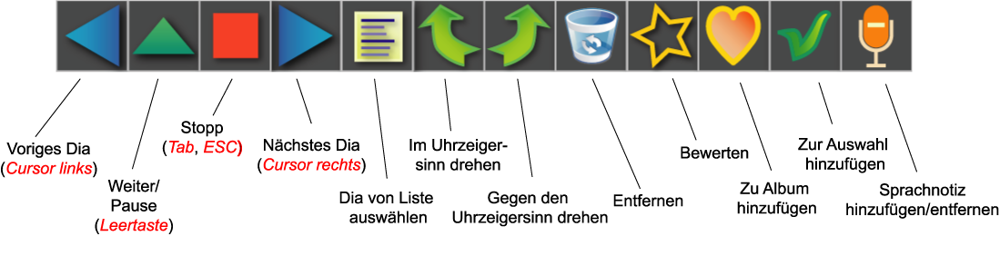

Diaschau
Der
Zweck der Diashow-Einrichtung ist die bequeme Beurteilung von
Bilder, nicht die Erstellung professioneller audiovisueller
Shows. Deshalb bietet die Abspieleinheit Möglichkeiten,
Bildeigenschaften beim Abspielen zu ändern Bewegen
Sie dazu einfach die Maus über dem Bild. Die Abspieleinheit geht dann
sofort in den manuellen Modus über und ein Bedienfeld wird
eingeblendet.
Nun klicken Sie eine der Schaltflächen. Wenn
nicht, wird das Bedienfeld nach einer Weile ausgeblendet. Die
Abspieleinheit bleibt jedoch im manuellen Modus, bis ein weiterer
Befehl
gegeben wird.
Die folgenden Schaltflächen stehen
zur Verfügung:
- Voriges Dia. Ein kurzer Klick führt zum vorigen Dia.
Ein längerer Druck öffnet eine
Auswahlliste. Die Abspieleinheit bleibt im manuellen Modus.
- Abspielen. Setzt das
automatische Abspielen fort.
- Beenden. Ende
der Show.
- Ein kurzer Klick führt
zum nächsten Dia. Ein längerer Druck öffnet eine Auswahlliste. Die
Abspieleinheit bleibt im manuellen Modus.
- Auswahlliste. Das nächste zu zeigende Dia kann frei aus der Liste gewählt werden.
- Im
Uhrzeigersinn drehen. Die
Abspieleinheit bleibt im manuellen Modus.
- Gegen den Uhrzeigersinn drehen. Die Abspieleinheit bleibt im manuellen
Modus.
- Bewerten oder Löschen. Die Abspieleinheit bleibt im manuellen
Modus.
- Bild Alben hinzufügen. Die Abspieleinheit bleibt im manuellen
Modus.
Tipp: Legen Sie ein
Album namens TODO an. Während einer Diashow können Sie so Bilder, die
noch bearbeitet werden müssen, einfach diesem Album hinzufügen. - Bild der Auswahl hinzufügen oder wieder aus der Auswahl entfernen.
Wurden während der Diaschau Bilder der Auswahl hinzugefügt, so werden
nach Ende der Diaschau diese Bilder in der aktuellen Galerie selektiert.
- Sprachnotiz hinzufügen/entfernen.
Öffnet einen Dialog, in dem Sie eine Sprachnotiz aufnehmen, eine
vorhandene Audiodatei als Sprachnotiz anhängen, oder eine existierende
Sprachnotiz entfernen können.
Alternativ
können die folgenden Tastenkombinationen verwendet werden.
- Tab oder Esc Ende
der Show.
- Cursortaste nach links:
Voriges Dia. Die Abspieleinheit geht in den manuellen
Modus.
- Cursortaste nach rechts: Nächstes Dia. Die Abspieleinheit geht in den
manuellen Modus.
- Cursortaste nach oben: Öffnet die Auswahlliste.
- Strg + Cursortaste nach links oder R: Gegen den Uhrzeigersinn drehen.
- Strg + Cursortaste nach rechts oder r: Im
Uhrzeigersinn drehen.
- Leertaste :
Umschalten zwischen manuellem Modus und automatischem Abspielen.
- 0, 1, 2, 3,
4, 5: Zeigt den Dialog zum Bewerten von
Bildern.
- v oder V: Sprachnotiz hinzufügen/entfernen.
- DEL: Zeigt den Dialog zum Löschen von Bildern.
- F1: Zeigt einen kurzen Hilfetext.
- F2: Zeigt die Metadaten.
- Enter: Fügt das aktuelle Bild der Auswahl hinzu oder entfernt es aus dieser.
